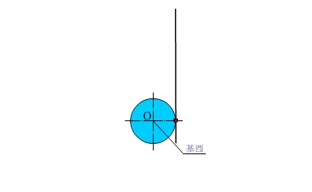
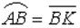
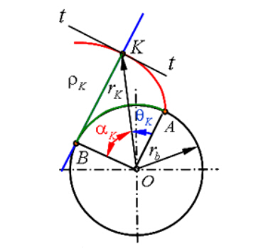
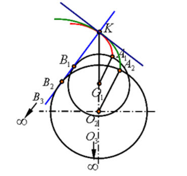
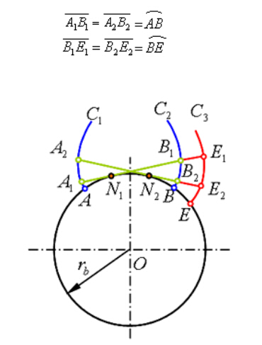
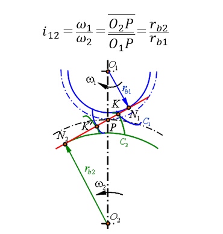

齿轮齿廓有渐开线型，摆线型和圆弧型等等。目前使用最多的还是渐开线齿廓齿轮。
1.渐开线定义
渐开线是一条直线（发生线）在定圆（基圆）上作纯滚动时，其上任意一点在此过程中走过的轨迹便是此定圆的渐开线。如下图1所示。
图1 渐开线
2.渐开线的性质
（1）。
（2）渐开线上任一点的法线必切于基圆。 B 为发生线的瞬心， K 速度方向即为渐开线的切线 t - t 。
（3）发生线与基圆的切点B是渐开线在K点的曲率中心，则KB为其曲率半径ρk。渐开线各点的曲率半径不同。渐开线离基圆越近，ρk越小，渐开线越弯曲；渐开线离基圆越远，ρk越大，渐开线越平直。
（4）渐开线的形状仅取决于基圆的大小。当γb→∞时，渐开线无限逼近直线。
（5）渐开线的形状仅取决于基圆的大小。
（6）基圆内无渐开线。
（7）同一基圆上任意两条渐开线上各法线距离相等。
3.渐开线齿廓的啮合特点
（1）渐开线齿廓能保证定传动比传动（传动平稳，无冲击）
设C1、C2为一对渐开线齿廓，两齿廓在任意点 K 啮合时，过 K 作两齿廓的法线N1N2为两基圆的一条内公切线。由于两基圆为定圆，在同一方向的内公切线只有一条，所以不论这对齿廓在任何位置啮合，过啮合点所作两齿廓的公法线必将与内公切线N1N2重合，即一对渐开线齿廓从开始啮合到脱离接触，所有的啮合点均在内公切线线N1N2上，称此公切线为N1N2啮合线 。
由于一对渐开线齿廓的啮合线为一定直线，其与连心线O1O2的交点 P 必为一定点。所以渐开线齿廓能实现定传动比传动。
（2）渐开线齿廓啮合具有可分性
实际中心距与设计中心距略有变化时，传动比仍能保持不变的特性，称为中心距可分性。
（3）啮合线是直线，受力方向不变，传动平稳
由于啮合线与两齿廓接触点的公法线重合，且在齿轮传动中啮合线一定为直线，而两齿廓间的正压力又是沿接触点的公法线方向的，故知渐开线齿轮在传动过程中，齿廓间的正压力方向始终不变。这对齿轮传动的平稳性是很有利的。